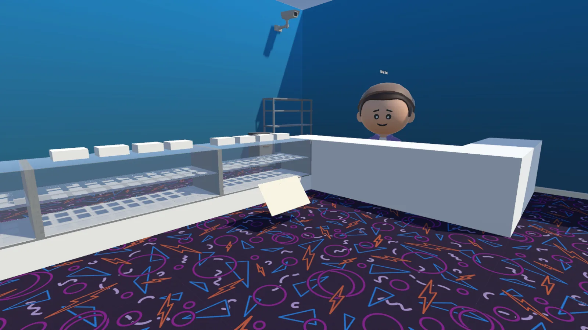
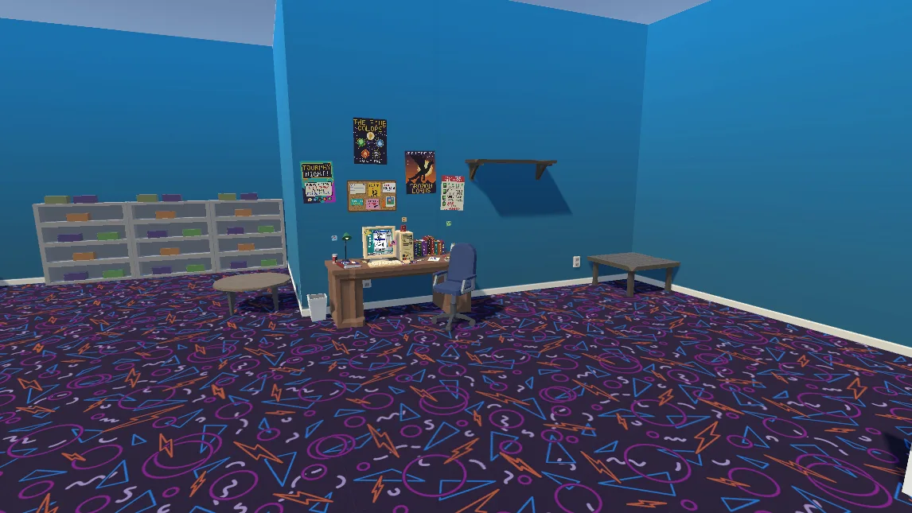
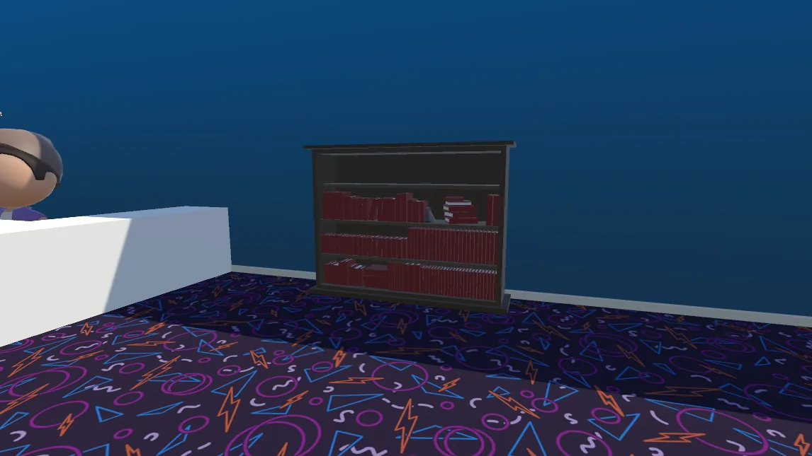

The world
In 1993, the card shop is still the center of the community. It is where rumors spread, decks are built, and a few heroic stories begin with a bad trade and a lucky booster.
01 / The premise
A single-player card-shop adventure about collecting, trading, and learning the strange little rituals that made the era unforgettable.
In 1993, the card shop is still the center of the community. It is where rumors spread, decks are built, and a few heroic stories begin with a bad trade and a lucky booster.
Run the shop. Keep the shelves stocked. Talk to the regulars. Track the sets, the singles, and the stories each player brings in with their favorite deck.
Every opening feels like a small miracle, every trade carries a memory, and every tournament weekend becomes part of the myth of the place.
'90s Magic is about atmosphere as much as mechanics: loud tables, bright shelves, old cardboard, and the joy of making a deck that feels like it belongs to you.
It is 1993, and the whole world is one card shop: glass cabinets of singles along the wall, a bookshelf of guides, a computer in the corner, and a carpet that has never heard of good taste. Seven cabinets hold sixty singles each, one for every year of the game, and they open up as time moves on.
Behind the counter, the shop owner keeps an eye on things, announces when new stock arrives, and notices when you start making a name for yourself. Regulars wander in to browse, buy, sit down for a match, or leave empty-handed. And Molly, the shop dog, goes wherever she likes. You can pet her.

You are a kid with an allowance and a very big idea. Walk the shop in third person, then zoom all the way in to see it through your own eyes, with an orbit camera that works like the old online RPGs. Pick your clothes and hair, spend your allowance on packs, singles, books, and magazines, and challenge anyone sitting at a table.
There are two ways to play. Campaign is the story: win matches to build reputation, and let the years roll forward. Free mode is the sandbox: all 25 expansions are on the shelves from the start, money is the only currency, and the goal is the collection itself.
Cards start out as rumors. See one in a cabinet, watch an opponent play it, spot it in a book or a magazine, or crack it from a pack, and it becomes discovered. Own a copy and it is collected. The game covers 31 sets and 6,792 cards across seven years of Magic history.
Booster packs follow real collation research rather than a generic recipe. Most sets get 15 cards, but Fourth Edition, Mirage, Tempest, and Urza's Saga packs never held basic lands, Ice Age mixed its lands into the commons, and the oldest expansions came in 8-card packs with no true rares. Every rare has the same odds, so Black Lotus is exactly as likely as any other Alpha rare. Its scarcity comes from how few Alpha cards were ever printed.
A desk with an old computer is your workbench. Browse your collection, open packs, and build 60-card decks with a 15-card sideboard and no more than four copies of anything. Cards are never used up, so the same card can sit in as many decks as you like, as long as you own one.
The real chase is the template decks: 492 historical decklists from the era, pulled from the 1997 Shandalar video game, deck-building books, InQuest, The Duelist, the World Championships, and the 1996 Pro Tour. Collect every card in a list and that deck is yours for good. Then take it to a table and play it against the shop, with a stack-based rules engine and opponents whose toughness comes from their decks, from Easy all the way up to Very Hard bosses.

Once a year the convention center opens its doors, and it is the shop scaled up: more people, more vendor booths, and more chances to find the cards you could never find at the counter. Rare cards turn up here more often than at the shop, and every find is meant to feel like an event.
Register at the booth, take your assigned seat, and a sealed tournament begins. You open six packs, build a deck from only what you pulled, and play Swiss rounds with a cut to the top eight and a single-elimination bracket. Your rival and your friend are always in the field. The convention center is still on the drawing board, but the rules are settled.
The campaign runs from 1993 to 1999 in 26 phases, one for nearly every release from Alpha to Urza's Destiny. Win matches, earn reputation, then go home and sleep on it. When you come back, the shop has new stock on the shelves. Each year ends with a showdown against the shop's best player.
Guiding you through it is the Time Wizard, a hooded wizard from the future who hands you your first decks, shows up when a new year is ready, and explains the bits of Magic history the game skips over. Beat everything the nineties can throw at you, and she has one last challenge waiting.
Nobody in 1994 knew what Black Lotus was worth. The plan is for magazine price guides to set the market and shift it as new sets arrive, with cards you haven't researched showing up as unidentified. Once you learn a card's value, valuable cards glow, and the legendary ones get a treatment all their own.
Books are one-time purchases. The Encyclopedia volumes reveal every card in the sets they cover, and deck books and magazines unlock the recipes inside them. InQuest arrives on its real schedule, starting with Issue 0 in April 1995, and you can pick up an issue and flip through it page by page.

'90s Magic is a solo project built in Unity 6 and Blender. The card database comes from Scryfall's bulk data, filtered down to the 1993 to 1999 sets. Card art is never bundled with the game: it streams from Scryfall as you play and is cached on your drive. Magazine scans stream the same way from the Internet Archive.
The screens are built with Unity's UI Toolkit, which styles menus much like a web page. The world is dressed with low-poly asset packs, the people are assembled from modular parts, conversations and the shop's ambient chatter run on a dialogue system, and the camera is Cinemachine. Even the save files are hand-rolled, so every save slot is its own little world.